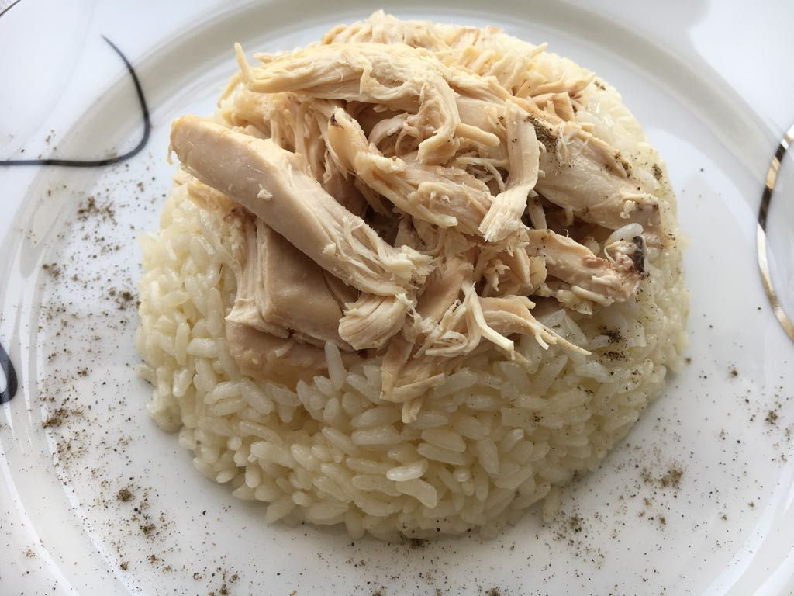

...Tavuklu Pilav Tarifi...
Butcelere uygun, sizi yormayacak, yapimi kolay ve yemekten keyif alacaginiz tavuklu pilav tarifi!

Tarif: Erhan A. Yasavul
Zaman ve miktar
- Kac kisilik: 6 kisilik
- Hazirlama suresi: 20 dakika
- Pisirme suresi: 40 dakika
Tavuklu Pilav Tarifi İçin Malzemeler:
- Bir bütün tavuk
- Iki su bardağı pirinç
- Uc yemek kaşığı tereyağı
- Uc su bardağı tavuk suyu
- Iki tatlı kaşığı tuz
Tavuklu Pilav Nasıl Yapılır?
- Tavuğun derisini tamamen temizleyip parçalara ayırın. Tencereye alıp suda haşlayın. Pişmesine yakın bir tatlı kaşığı tuz ekleyin.
- Pirinci yıkayıp süzün. Bir tencerede 1 yemek kaşığı tereyağı eritin. Pirinci tencereye ilave edin. Pirinçler şeffaflaşıncaya kadar 5 dakika karıştırarak kavurun.
- Tavuk suyunu ve bir tatlı kaşığı tuzu ekleyip kapağını kapatın. Kısık ateşte pişirin.
- Haşladığınız tavuğun etlerini didikleyin, pilavın üzerine ekleyerek servis edin.
Püf Noktası:
- İstersenizeğer tavuklu pilava 1 suu bardağı haşlanmış nohut ilave edebilirsiniz.
- Tane tane bir pilav istiyorsanız eğer yağda 5 dakika kavurun.
- Pilav demlenirken fazla su ile lapa olmaması için üzerine bir bez örtmeyi unutmayın.
- Karabiber pilava çok yakışacaktır, servis ederken ekleyebilirsiniz.
Umarim istediginiz gibi olmustur. Hepinize afiyetler dilerim!